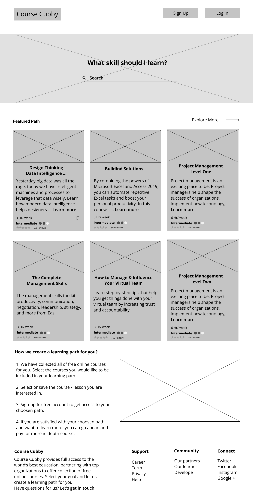

Digital Wireframes
The early rounds of digital wireframes were made using Figma. For inspiration and reference, I looked at the screens for other sites .Even starting with these early Wireframes, I tried to design a clean, simple UI focused on text content.
I designed more screens that were necessary in this first round
View all Wireframes

Iterations
Through Course Cubby prototype usability testing, I have identified users need and have generated more ideas to reached at the best possible solution.
So I iterate some feature all over again with the help of usability test and A/B Maze result feedback. Here are some of the different versions Course Cubby has gone through.
User Testing
The primary purpose of the usability test was to determine the usability strengths and weaknesses of the "Course Cubby”. The test also asked questions about the branding communication. Users interfaced with a Hi Fidelity Mockup prototype test created using Figma, InVision, and Maze design.
Users were given three tasks, and they provided valuable feedback for how to improve clarity and user-friendliness for the product.
The full test report can be viewed here:
InVision prototype
I applied the changes to reflect the most popular choices from user test.
Final Product
Applying suggestions based on user testing, I created the latest version of “Course Cubby”. I stayed focused on the target of creating user friendly service while applying branding to reinforce the product identity and applying usability changes with real users in mind. These screens can be viewed here;
Conclusion
After hours, days, and weeks of research, sketching, designing, testing, reiterating, and more testing, I have come to the current version of “Course Cubby”.
What worked? What didn’t work?
User Surveys proved to be very beneficial in providing a focus on creating our product. Researching User Flows for competitors was also helpful in guiding us on what screens and mockup windows to create. Users responded positively to the line illustrations of the final design. But there were several places and opportunities for users to be confused, because there are plans to include drag and drop functionality for the final product.
Mobile App?
Though I am satisfied with the testing of the Desktop version of Course Cubby, I was unable to test the Mobile version, it is entirely possible that mobile users will have a different experience and different preferences. I would conduct Usability Tests using the Mobile version if I had more time on this project.
User input was live saver!!
The initial project brief was a bit overwhelming .Starting with the first User Surveys, user input helped to narrow the scope of the project and point us toward data privacy. The rounds of Usability Testing revealed tasks, instructions, or processes that seemed
clear to me, but were not so clear to different users. This helped me to see and realize things I could not surmise on my own. The Preference Test helped me to make design decisions that were challenging to make on my own.
Lesson Learned
Throughout this project, I learned so much about people and what they expect from simple sites. For example, even the site purpose was explained to a few users, they still wanted the website to do more, like take notes etc .
So one big takeaway was that if there is an all-in-one solution people will take that over a perfect partial solution.
Secondly, I learned that many people want to explore what it's like to try different skills without paying thousands of dollars or several of hours to find out it's just not for them.
It is more important to have finished good enough project than an unfinished “perfect” project. it’s amazing how helping my users give me a new, humbling perspective on my own goal s, designing products that positively impact and serve the greater good.
So let's create more meaningful products that solve issues like this.